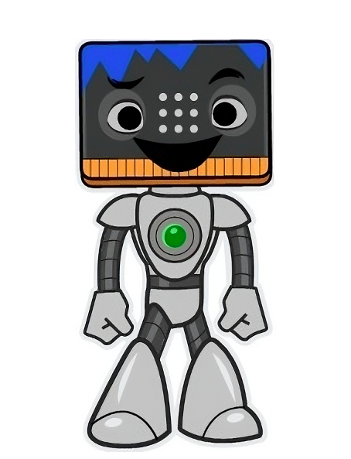
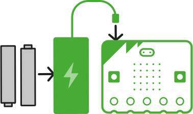
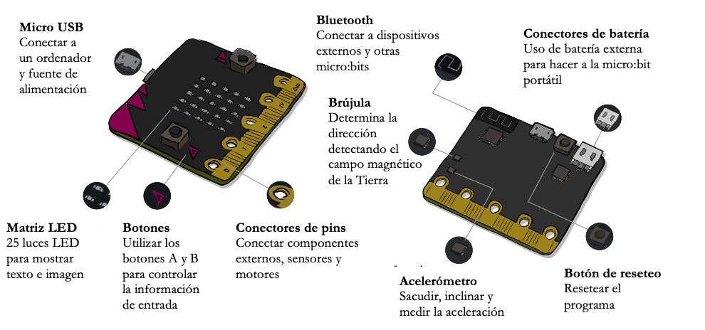

1. Utilizamos nuestra micro:bit

¡Ha llegado el momento de aprender a hablar con una computadora!
La placa micro:bit será ese pequeño cerebro computacional al que le diremos qué hacer y cómo hacerlo.
No te preocupes si crees que es difícil. Iremos poco a poco para que aprendas el idioma de las computadoras.
Sigue los siguientes pasos.
1. ¿Qué es la placa Micro:bit?
La placa micro:bit es una tarjeta programable (mini ordenador) que permite practicar la codificación y la creación digital.
Puede decirse que es el cerebro que hace que un robot u otro dispositivo funcione a través de un código (instrucciones).
Observa el siguiente vídeo sobre sus partes.
2. Enciéndela y juega
Pon 2 pilas AAA al paquete de baterías y conéctalo a tu micro:bit.
Tu micro:bit se encenderá automáticamente.
También puedes alimentar tu micro:bit conectando el cable USB a una computadora, sin usar la batería.
Al encenderla, aparecerá una secuencia de comandos de bienvenida. Para probarla:
- Presiona el botón A y B
- Agita la micro:bit
- Inclina la micro:bit
- Aplaude 5 veces
3. Makecode para codificar
Codificar es escribir un código que la micro:bit pueda entender para poder hacer algo.
Utilizaremos la aplicación web Microsoft MakeCode para crear el primer fragmento de código y transferirlo a la placa micro:bit.
Primero, visiona el vídeo. Después, cliquea en el siguiente enlace Microsoft MakeCode y accede a la página web.
4. Nuestra primera codificación
Para poder hacer tu primera codificación, sigue los pasos descritos en el siguiente vídeo.
5. Transfiere el código a la micro:bit
Ahora es el momento de transferir tu código completo a tu micro:bit.
Selecciona 'Descargar' (abajo a la izquierda en MakeCode) y sigue las instrucciones.
El proceso es el mismo que guardar un archivo en tu PenDrive.
Por último, podrás ver el fragmento codificado en tu placa micro:bit.
{kind=link}
Partes de una placa micro:bit
